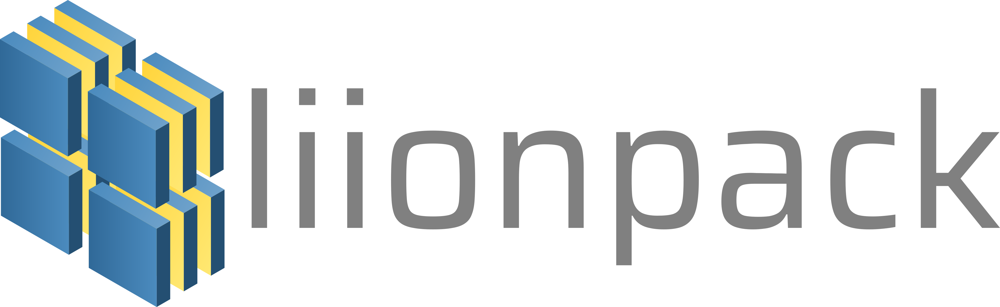

open source
I like open source research software.
Refer to https://saransh-cpp.github.io/repositories/ for a newer version of this page!
My contributions are scattered all over GitHub. I usually contribute to research software written in Python and Julia, but I am exploring the C/C++ side as well. Here are some of my significant contributions.
Member, maintainer, and core-developer
PyBaMM (Python Battery Mathematical Modeling)
| PyBaMM (Python Battery Mathematical Modelling) solves physics-based electrochemical DAE models by using state-of-the-art automatic differentiation and numerical solvers. I started working with PyBaMM's team during my time as a Google Summer of Code developer. The team was very welcoming and inclusive; hence, I decided to continue working with them after the program ended! I am not very well versed in the mathematical modeling of batteries; therefore my main contributions revolve around bug fixes, adding utility features, and maintaining the infrastructure. Over the past few months, my contributions have mostly shifted towards the packaging, infrastructure, and CI/CD pipeline side of PyBaMM. I do wish to continue contributing new features to the PyBaMM repository. |
liionpack
| liionpack takes a 1D PyBaMM model and makes it into a pack. You can either specify the configuration e.g. 16 cells in parallel and 2 in series (16p2s) or load a netlist. Before liionpack's initial release, I worked extensively on its documentation, infrastructure, and CI/CD pipeline. As a result, Liionpack's paper, published in the Journal of Open Source Software, now lists me as a co-author!! I still look after liionpack's documentation, infrastructure, and CI/CD pipeline! |  |
BattBot
| An automated Twitter Bot that Tweets random Battery Simulations and replies to requested Battery Simulations. BattBot was my Google Summer of Code project. The project started as a stand-alone repository and is still running on the same good old infrastructure! The bot's codebase is well documented but it can be a bit confusing sometimes. The bot is partially deployed on Heroku and partially on GitHub Actions (yes, confusing). You can find it tweeting battery simulations on Twitter twice a day! Everything in the bot was built from scratch by me, under the guidance of my mentors. I still maintain the bot, which includes fixing bugs, adding features, and fixing documentation. |
Member and core-contributor
FluxML
| Flux is an elegant approach to machine learning. It's a 100% pure-Julia stack, and provides lightweight abstractions on top of Julia's native GPU and AD support. Flux makes the easy things easy while remaining fully hackable. I worked on the FluxML ecosystem in the summer of 2022. I was primarily hired as a technical writer under Julia Season of Contributions, but I soon started contributing to the code as well as the infrastructure of the ecosystem. My work included fixing bugs and developing the infrastructure of prominent Julia ML libraries such as Flux.jl, NNlib.jl (Neural Network primitives), Metalhead.jl (Computer vision models), and Functors.jl. I also spent a considerable amount of time writing original Machine Learning/Deep Learning tutorials, documentation, and API references for FluxML’s ecosystem. I still contribute to the ecosystem! You can find me reviewing PRs, fixing docs, debugging bugs, and improving the infrastructure! |
Collaborater and core-contributor
Vector
| Vector is a Python 3.7+ library for 2D, 3D, and Lorentz vectors, especially arrays of vectors, to solve common physics problems in a NumPy-like way. My IRIS-HEP fellowship work was focused on developing vector. I Prepared Vector for the v0.9.0, v0.10.0, and v1.0.0 (first major release) releases by developing new public APIs, fixing bugs, writing documentation, and building new infrastructure. This work was carried out under the supervision of CERN and Princeton researchers. The major release is currently being used by researchers at CERN, ATLAS, CMS, and Princeton University to construct 4D jagged (awkward) vectors and perform Just-In-Time compiled vector operations in Python. I still contribute to vector and the HEP ecosystem (scikit-hep/awkward, scikit-hep/cookie, scikit-hep/scikit-hep.github.io, ...) in various forms! |
Other prominent contributions
This list is most probably incomplete, but I try my best to keep it updated. Visit my GitHub profile for a better overview of my contributions.
Zarr
An implementation of chunked, compressed, N-dimensional arrays for Python.
Migrated Zarr’s build and packaging infrastructure to a pyproject.toml based configuration, and cleaned up their redundant infrastructure.
DeepXDE
DeepXDE is a library for scientific machine learning
Implemented utility functions and improved the existing examples on solving partial differential equations using Physics-Informed neural networks.
Colour
Colour Science for Python
Implemented the conversion between RGB and HCL colourspaces, along with tests and documentation.
Scikit-HEP ecosystem
High Energy Physics in Python
Fixed minor bugs in awkward and hist, added support for coverage in cookie, and wrote new developer pages.
Scikits.odes
Offers extra ODE/DAE solvers; an extension to ones available in SciPy
Debugged and fixed the build (which was failing because of setuptools) and removed support for Python 2.7-3.6.